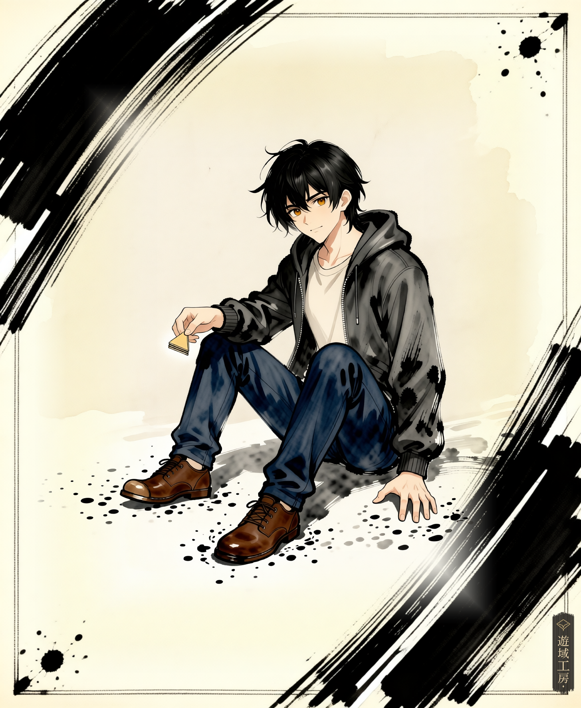

YK CREATIVE WORKS ／ 遊域かなと
あなたの、
次に読みたい物語を。
仲間と暮らす日々。工夫して挑む戦い。
それぞれが選ぶ、これからの生き方。
気になる一冊を、この作品集から。

本編の一枚絵半分にすればいい第2話「安全なだけじゃ暮らせない」より
FEATURED STORY 代表作
このスキル、やばスギル。～ガチャ沼に堕ちたら俺の負け～
ガチャで迎えた彼女たちと、
逃げ場所を暮らせる家へ。
回したい。でも、沼には堕ちたくない。
夜斗の言い訳と仲間のツッコミ、少しずつ近づく距離。
出会う一人ひとりが、暮らしを変えていく。
あの人の過去が気になったら。人物と来歴譚の関係マップへGALLERY
物語の、一瞬に会う。
最後の菓子を半分に割り、ファステに差し出す夜斗。
挿絵ギャラリーを見るFIND YOUR NEXT STORY
今日は、どんな物語を？
表紙やひとこと紹介から、あなたの読みたい一冊へ。
今日は、どんな楽しさを？
すべての作品
この組み合わせの作品は、まだありません。
小説を中心に、物語をいろいろなかたちで届ける創作の工房です。
音声ドラマ、アニメ、ゲーム、漫画、音楽へと、表現を広げていくことを目指しています。
気になる作品の続きを、それぞれの掲載先でお楽しみください。